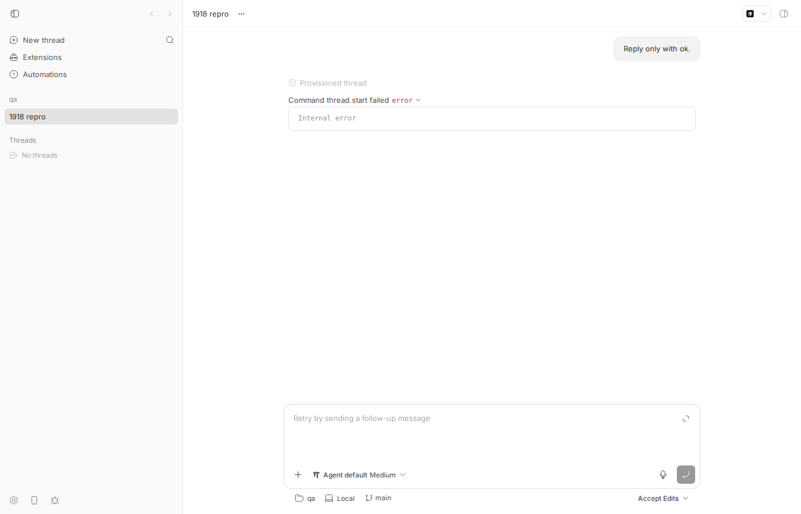
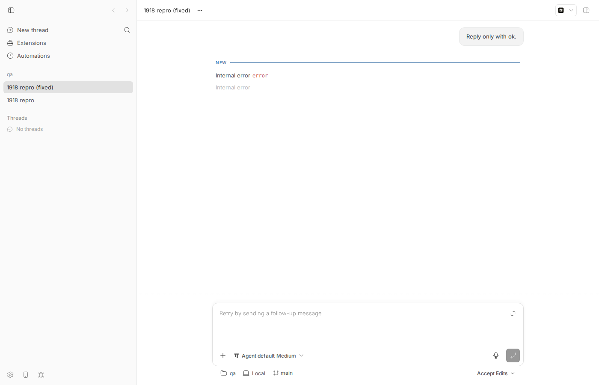

#1918 · internal error when use omp Agent
Verdict: REPRODUCED · Root-cause confidence: high
1. TL;DR
Starting any thread with the acp-omp provider in bb 0.39.0 fails immediately with "Command thread.start failed — Internal error". The reporter's diagnosis is correct and I reproduced it end to end on Linux against the base commit: when the ACP bridge builds the bb-bridge MCP server config it hands to the agent in session/new, it uses process.argv[1] as the entry point to re-execute itself with --mcp-stdio. Since PR #1640 (shipped in 0.39.0) every provider bridge is launched through the generic bootstrap bb-provider-bridge-worker.mjs (bridge-worker-entry.ts from source), so argv[1] is the bootstrap, not the ACP bridge module. The spawned "MCP server" is therefore node <bootstrap> --mcp-stdio, which exits 1 with provider bridge bootstrap usage: <bridgeModulePath> <pluginId> <pluginDataDir>. omp treats a dead MCP transport as fatal and rejects session/new with {"message":"Internal error","data":{"details":"bb-bridge: Transport closed"}}; bb drops error.data and shows only "Internal error". Every ACP thread carries at least one dynamic tool (update_environment_directory), so every ACP agent receives the broken MCP config; Cursor and Grok tolerate the dead server (thread starts, but the dynamic tool silently never works), omp does not. A one-line fix (use import.meta.url) makes the repro test pass and lets omp threads start on my dev instance.
2. Claims vs findings
| Claim from the issue | Status | Evidence |
|---|---|---|
Starting an acp-omp thread fails at thread.start with "Internal error" | Verified | Dev instance at d81fee6f, omp 17.3.8: thread thr_tbww7d7myk ends in status error with event {"code":"thread_command_failed","message":"Command thread.start failed","detail":"Internal error"} (events, screenshot). |
resolveBridgeProcessArgsForMcpServer() uses process.argv[1], which is now the worker script | Verified | plugins/provider-acp/src/bridge/bridge.ts:328-333; live bridge argv captured from /proc: node --conditions=source --import tsx …/bridge-worker-entry.ts …/plugin-host-artifacts/provider-acp/<digest>/host.js provider-acp …/bridge-data (live-bridge-argv.txt). |
The advertised MCP server is [worker, "--mcp-stdio"] and exits immediately | Verified | Repro test prints the advertised config with args[3] = …/bridge-worker-entry.ts; running it yields exit code 1, stderr provider bridge bootstrap usage: …, no MCP response (vitest-main.log). |
omp rejects session/new with bb-bridge: Transport closed | Verified | Driving omp acp directly with the worker as MCP entry: {"code":-32603,"message":"Internal error","data":{"details":"bb-bridge: Transport closed"}}; same drive with the bridge module as entry: session/new OK (worker log, bridge log). |
| Regression from the bridge-worker refactor, new in 0.39.0 | Verified | Bootstrap introduced in c5b53caab (#1640, 2026-08-17); git merge-base --is-ancestor: not in desktop-v0.38.0, in desktop-v0.39.0. Before #1640 the bridge was executed directly so argv[1] was the bridge artifact. |
Affects every acp-* provider, not just omp | Partially verified | The broken config is sent for every ACP session (the server always contributes update_environment_directory, see thread-runtime-config.ts:118-133). Whether the thread fails depends on the agent: cursor-agent acp and grok agent stdio both answered session/new OK with the dead MCP server, so they start but lose the dynamic tool silently; omp fails hard. |
bb drops error.data.details; UI and daemon log show only "Internal error" | Verified | plugins/provider-acp/src/bridge/agent-connection.ts:141-147 builds new Error(message.error.message) and ignores error.data. Daemon log for the failed start: err.message=Internal error, err.data=None (log). Also visible after the fix: omp's session/prompt error "No model selected…" surfaces as bare "Internal error" (screenshot). |
| First session of a bridge process sometimes succeeds (timing dependent) | Unverified | Against omp 17.3.8 on Linux the failure was deterministic in 4/4 direct drives and 1/1 dev-instance thread. I could not reproduce a first-session success; plausible as an omp-side MCP-init race, not a bb code path I can point at. |
{kind=link}
{kind=link}
3. Environment
- bb source at
d81fee6f47178c75f6ecf23d80bb69c4a3e9e5c3(origin/main HEAD at time of writing:0f6759a7; no later commit touchesplugins/provider-acp,packages/agent-runtime,apps/host-daemonorpackages/bb-app). - Linux 7.0.0-29-generic (Ubuntu), Node v24.18.0, tsx 4.23.1.
- omp:
@oh-my-pi/pi-coding-agent@17.3.8installed locally under/tmp/bb-1918-omp, run with bun 1.3.14 unpacked under/tmp/bb-1918-bun(omp is not installed on this machine; the issue used 17.3.7 via Homebrew on macOS). Also probed: cursor-agent, grok 1.0.3. - Dev instance from this worktree: App
http://localhost:12764, Serverhttp://localhost:20764, Host daemon127.0.0.1:28764, data dir~/.bb-dev/projects-bb-.claude-worktrees-wf_d5c47f31-487-1-3590cba46308(deleted at cleanup). Started with omp+bun prepended toPATHso the daemon auto-detectedacp-omp(start-dev-with-omp.sh).
4. Minimal reproduction
4a. Unit-level (no agent, no credentials needed) — fails on d81fee6f, passes with the fix
- Copy
mcp-server-entry-1918.repro.test.tstoplugins/provider-acp/src/bridge/. It spawns the ACP bridge exactly likepackages/agent-runtime/src/provider-registry.tsdoes (node --conditions=source --import tsx bridge-worker-entry.ts bridge.ts provider-acp <dataDir>), starts a thread against the fake ACP agent with one dynamic tool, asks the fake agent to echo the MCP server config it received, then executes that config and sends an MCPinitialize. - Run:
cd plugins/provider-acp && pnpm exec vitest run src/bridge/mcp-server-entry-1918.repro.test.ts
- Actual on d81fee6f (
full log):advertised MCP server: { "name": "bb-bridge", "command": "/home/USER/.nvm/versions/node/v24.18.0/bin/node", "args": [ "--conditions=source", "--import", "file:///…/node_modules/.pnpm/tsx@4.23.1/node_modules/tsx/dist/loader.mjs", "/…/packages/provider-bridge-protocol/src/bridge-worker-entry.ts", <-- the bootstrap, not the ACP bridge "--mcp-stdio" ], … } MCP child exit: {"code":1} stderr: provider bridge bootstrap usage: <bridgeModulePath> <pluginId> <pluginDataDir> (absolute paths) stdout lines: [] AssertionError: expected true to be false // cfg.args contains "bridge-worker" ❯ src/bridge/mcp-server-entry-1918.repro.test.ts:216:63 - Expected (and actual with the one-line fix below,
log):"args": [ …, "/…/plugins/provider-acp/src/bridge/bridge.ts", "--mcp-stdio" ] MCP child exit: undefined stderr: stdout lines: [ '{"jsonrpc":"2.0","id":1,"result":{"protocolVersion":"2024-11-05","capabilities":{"tools":{}},"serverInfo":{"name":"bb-bridge","version":"1.0.0"}}}' ] ✓ advertises an MCP server command that actually answers MCP initialize
4b. Agent-level: omp rejects session/new only when the MCP entry is the worker
drive-acp-agent.mjsspeaks ACP to an agent directly:initialize→session/newwith onebb-bridgeMCP server whose entry is given on the command line.run-omp-drive.shwraps it for the temp omp install.- Worker as entry (what bb 0.39.0 sends):
$ run-omp-drive.sh # default entry = packages/provider-bridge-protocol/src/bridge-worker-entry.ts -> session/new mcpServers: [{"command":".../node","args":["--conditions=source","--import","file:///.../tsx/dist/loader.mjs",".../bridge-worker-entry.ts","--mcp-stdio"]}] <- {"jsonrpc":"2.0","id":2,"error":{"code":-32603,"message":"Internal error","data":{"details":"bb-bridge: Transport closed"}}} session/new FAILED - Bridge module as entry (the fix):
$ run-omp-drive.sh /…/plugins/provider-acp/src/bridge/bridge.ts -> session/new mcpServers: [{"command":".../node","args":[…,".../plugins/provider-acp/src/bridge/bridge.ts","--mcp-stdio"]}] <- {"jsonrpc":"2.0","id":2,"result":{"sessionId":"01a01a93-a579-7000-acd6-4a81d2ef46ba", …}} session/new OK - Same worker-entry config against
cursor-agent acpandgrok agent stdio: bothsession/new OK— they ignore the dead MCP server, so those providers start but never getupdate_environment_directory.
4c. End to end on a dev instance (d81fee6f)
- Make omp discoverable and start the dev app:
export PATH=/tmp/bb-1918-omp/node_modules/.bin:/tmp/bb-1918-bun/bun-linux-x64:$PATH scripts/bb-dev-app current # prints App/Server/Host daemon URLs + data dir eval "$(scripts/bb-dev-app env)" pnpm bb:dev provider list # shows acp-omp
- Create a project on a scratch repo and spawn a thread:
curl -s -X POST $BB_SERVER_URL/api/v1/projects -H 'content-type: application/json' \ -d '{"name":"qa","source":{"type":"local_path","path":"/tmp/bb-1918-qa-repo","hostId":"<host id from pnpm bb:dev machine list>"}}' pnpm bb:dev thread spawn --project <proj id> --provider acp-omp --permission-mode accept-edits --title "1918 repro" --prompt "Reply only with ok." --json - Actual: thread status
error; last event{"code":"thread_command_failed","message":"Command thread.start failed","detail":"Internal error"}Host daemon log (excerpt):"type":"thread.start","msg":"online host RPC failed" | err.message= Internal error | err.data= None.

- Apply the fix (
proposed-fix.diff), restart the dev app (the server rebuilds the plugin host artifact), spawn again:thread/startnow succeeds (providerThreadId01a01a97-c38c-7000-…assigned,events). The turn then fails with "Internal error" because my sandboxed omp has no model credentials (session/prompt→data.details: "No model selected…") — which is a second demonstration of the swallowederror.data.

Repro files: 1918/repro/
Repro test source (mcp-server-entry-1918.repro.test.ts)
/**
* Repro for get-bb/bb#1918: the `bb-bridge` MCP server the ACP bridge hands
* to the agent is spawned with the provider-bridge *worker* script as its
* entry point (process.argv[1]) instead of the ACP plugin's own bridge
* module, so the child dies on the worker's usage check and the agent sees
* "bb-bridge: Transport closed".
*
* Unlike bridge.test.ts this spawns the bridge exactly like the agent runtime
* does (node <bridge-worker-entry> <bridge module> <pluginId> <dataDir>) so
* process.argv[1] inside the bridge is the worker, and then actually executes
* the MCP server command the bridge advertised.
*/
import { spawn, type ChildProcess } from "node:child_process";
import { mkdtempSync, rmSync } from "node:fs";
import { tmpdir } from "node:os";
import { dirname, join, resolve } from "node:path";
import { fileURLToPath } from "node:url";
import { createInterface } from "node:readline";
import { afterEach, describe, expect, it } from "vitest";
const here = dirname(fileURLToPath(import.meta.url));
const BRIDGE_MODULE = resolve(here, "bridge.ts");
const FAKE_AGENT_PATH = resolve(here, "fake-acp-agent.mjs");
const WORKER_ENTRY = fileURLToPath(
import.meta.resolve("@bb/provider-bridge-protocol/bridge-worker-entry"),
);
const TSX = import.meta.resolve("tsx");
interface Msg {
id?: number | string;
method?: string;
params?: Record<string, unknown>;
result?: Record<string, unknown>;
error?: { message: string };
}
let bridge: ChildProcess | undefined;
let dataDir: string;
let workspaceDir: string;
const log: Msg[] = [];
let nextId = 1;
function send(method: string, params: unknown): number {
const id = nextId++;
bridge!.stdin!.write(
`${JSON.stringify({ jsonrpc: "2.0", id, method, params })}\n`,
);
return id;
}
async function waitFor<T>(
pick: () => T | undefined,
what: string,
ms = 20_000,
): Promise<T> {
const deadline = Date.now() + ms;
for (;;) {
const v = pick();
if (v !== undefined) return v;
if (Date.now() > deadline) throw new Error(`timed out waiting for ${what}`);
await new Promise((r) => setTimeout(r, 20));
}
}
function agentTexts(): string[] {
const out: string[] = [];
for (const m of log) {
if (m.method !== "thread/event") continue;
const ev = (m.params as { event?: Record<string, unknown> }).event;
if (ev?.type === "item/agentMessage/delta") out.push(String(ev.delta));
}
return out;
}
afterEach(() => {
bridge?.kill("SIGKILL");
rmSync(dataDir, { recursive: true, force: true });
rmSync(workspaceDir, { recursive: true, force: true });
});
describe("#1918 bb-bridge MCP server entry point", () => {
it("advertises an MCP server command that actually answers MCP initialize", async () => {
dataDir = mkdtempSync(join(tmpdir(), "bb-1918-data-"));
workspaceDir = mkdtempSync(join(tmpdir(), "bb-1918-ws-"));
// Spawn the bridge the way packages/agent-runtime/src/provider-registry.ts does.
const args = [
"--conditions=source",
"--import",
TSX,
WORKER_ENTRY,
BRIDGE_MODULE,
"provider-acp",
dataDir,
];
bridge = spawn(process.execPath, args, { stdio: ["pipe", "pipe", "pipe"] });
bridge.stderr!.on("data", (d) => process.stderr.write(`[bridge] ${d}`));
createInterface({ input: bridge.stdout! }).on("line", (line) => {
try {
log.push(JSON.parse(line) as Msg);
} catch {
/* ignore */
}
});
const startId = send("thread/start", {
threadId: "thread-1918",
cwd: workspaceDir,
instructionMode: "append",
options: {
permissionMode: "full",
permissionScope: "full",
approvalReviewer: null,
permissionEscalation: null,
providerOptions: {
acpLaunchSpec: {
displayName: "Fake ACP",
command: process.execPath,
args: [FAKE_AGENT_PATH],
env: {},
},
},
},
dynamicTools: [
{
name: "update_environment_directory",
description: "Move this thread to another environment directory.",
inputSchema: {
type: "object",
properties: { path: { type: "string" } },
required: ["path"],
},
},
],
});
const startResp = await waitFor(
() => log.find((m) => m.id === startId && m.method === undefined),
"thread/start response",
);
expect(startResp.error).toBeUndefined();
const providerThreadId = String(startResp.result!.providerThreadId);
send("turn/start", {
threadId: "thread-1918",
providerThreadId,
clientRequestId: "creq_abcdefghjk",
options: {
permissionMode: "full",
permissionScope: "full",
approvalReviewer: null,
permissionEscalation: null,
},
input: [{ type: "text", text: "echo-mcp-server-config", mentions: [] }],
});
const configText = await waitFor(
() => agentTexts().find((t) => t.startsWith("mcp-server-config:")),
"mcp-server-config echo",
);
const [cfg] = JSON.parse(
configText.slice("mcp-server-config:".length),
) as {
name: string;
command: string;
args: string[];
env: { name: string; value: string }[];
}[];
console.log("advertised MCP server:", JSON.stringify(cfg, null, 2));
expect(cfg.name).toBe("bb-bridge");
// Now run the advertised MCP server exactly as an ACP agent would.
const env = { ...process.env };
for (const { name, value } of cfg.env) env[name] = value;
const mcp = spawn(cfg.command, cfg.args, {
env,
stdio: ["pipe", "pipe", "pipe"],
});
let stderr = "";
mcp.stderr!.on("data", (d) => {
stderr += String(d);
});
const lines: string[] = [];
createInterface({ input: mcp.stdout! }).on("line", (l) => lines.push(l));
let exit: { code: number | null } | undefined;
mcp.on("exit", (code) => {
exit = { code };
});
mcp.stdin!.write(
`${JSON.stringify({
jsonrpc: "2.0",
id: 1,
method: "initialize",
params: {
protocolVersion: "2024-11-05",
capabilities: {},
clientInfo: { name: "repro", version: "0" },
},
})}\n`,
);
await waitFor(
() => (lines.length > 0 || exit !== undefined ? true : undefined),
"MCP initialize response or exit",
15_000,
);
mcp.kill("SIGKILL");
console.log(
"MCP child exit:",
JSON.stringify(exit),
"stderr:",
stderr,
"stdout lines:",
lines,
);
// The bug: args[0] is the worker bootstrap, which exits 1 with a usage error.
expect(cfg.args.some((a) => a.includes("bridge-worker"))).toBe(false);
expect(stderr).not.toMatch(/provider bridge bootstrap usage/);
expect(lines[0]).toContain('"serverInfo":{"name":"bb-bridge"');
}, 60_000);
});
5. Root cause
plugins/provider-acp/src/bridge/bridge.ts#L328-L333:
function resolveBridgeProcessArgsForMcpServer(): string[] {
const entryPoint = process.argv[1]
? resolve(process.argv[1])
: fileURLToPath(import.meta.url);
return [...process.execArgv, entryPoint, "--mcp-stdio"];
}
This is used by buildSessionMcpServers to produce the bb-bridge entry in session/new.mcpServers (command = process.execPath). The bridge expects to re-exec its own artifact with --mcp-stdio, which its top level handles at L2483-L2488 (if (process.argv.includes("--mcp-stdio")) runAcpDynamicToolMcpServer();).
Since #1640 the runtime never executes a bridge module directly. provider-registry.ts#L59-L77 spawns node [bridge-worker args] <bridgeModulePath> <pluginId> <dataDir>, where the worker is bb-provider-bridge-worker.mjs in a packaged daemon or --conditions=source --import tsx bridge-worker-entry.ts from source (bridge-path.ts#L36-L48). The bootstrap bridge-worker-entry.ts#L31-L47 reads process.argv.slice(2) and calls fail("provider bridge bootstrap usage: …") → process.exit(1) when the three positional args are missing — exactly what happens when it is started as <worker> --mcp-stdio. Inside the bridge, process.argv[1] is therefore always the worker path (truthy), so the import.meta.url fallback is dead code and the "MCP server" bb advertises is a process that prints a usage line and exits 1 before reading stdin.
Why omp fails and others don't: omp connects to each configured MCP server during session/new and turns a closed transport into a JSON-RPC error (data.details: "bb-bridge: Transport closed"). The bridge's connection.request("session/new") rejects, thread/start fails, and the daemon reports thread.start failed. Cursor and Grok swallow MCP startup failures, so their threads start with a silently missing update_environment_directory tool. Every ACP session receives the MCP entry because the server always contributes that built-in dynamic tool (thread-runtime-config.ts#L118-L133) and buildSessionMcpServers only short-circuits on an empty list.
Why no test caught it: bridge.test.ts imports handleLine in-process (argv[1] = vitest) and its dynamic-tool test (forwards ACP dynamic tool calls…) connects straight to the TCP side channel instead of executing the advertised command/args. The smoke tarball test only checks model/list on the artifact.
Secondary defect (error detail loss): agent-connection.ts#L141-L147 rejects with new Error(message.error.message ?? …) and discards message.error.data, so the only thing that reaches the daemon log, the thread error event and the UI is the agent's generic "Internal error".
6. Proposed fix (first principles)
Confident. The bridge's own module URL is the only thing that reliably names the artifact in every launch mode (source via tsx, packaged host.js artifact under the Electron binary with ELECTRON_RUN_AS_NODE restored — that env is already re-added by resolveBridgeProcessEnvForMcpServer). Diff (proposed-fix.diff):
- const entryPoint = process.argv[1] - ? resolve(process.argv[1]) - : fileURLToPath(import.meta.url); - return [...process.execArgv, entryPoint, "--mcp-stdio"]; + // process.argv[1] is the provider-bridge worker bootstrap, not this module: + // the bootstrap imports this artifact, so only import.meta.url names it. + return [...process.execArgv, fileURLToPath(import.meta.url), "--mcp-stdio"];
Verified: repro test passes, the full bb-plugin-provider-acp suite passes (162 tests, log), typecheck passes, and an acp-omp thread on the dev instance gets past thread/start. No wire shape changes, so no HOST_DAEMON_PROTOCOL_VERSION bump is needed; the fix ships in the plugin host artifact, which the daemon re-downloads by digest. Things to watch: (1) process.execArgv is still forwarded — correct from source (tsx loader is needed to run the .ts entry) and harmless packaged (empty); (2) keep the repro test (or fold it into bridge.test.ts) so the advertised command is actually executed, since that is the gap that let this ship. Separately, propagate error.data in agent-connection.ts (e.g. append details to the Error message) so agent-side failures are diagnosable from the UI and daemon log.
7. PR review
No open PR is linked to this issue (searched gh pr list --search "1918 OR mcp-stdio OR resolveBridgeProcessArgsForMcpServer"; only merged #350 and #1102, which introduced/adjusted this code before the worker refactor).
8. Related issues
- #1640 — "Agent providers as a first-class plugin surface (provider bridge protocol)" (merged c5b53caab): introduced the bootstrap that made
argv[1]wrong. - #1102 — "Fix ACP plugin tools in packaged Electron builds": earlier fix to the same MCP re-exec path (added
ELECTRON_RUN_AS_NODErestoration), shows this code path has no executed-command coverage. - #350 — "Add ACP dynamic tool support": origin of
resolveBridgeProcessArgsForMcpServer. - #1342 — "first class oh my pi integration" (open, omp).
9. Appendix
Commands run
gh issue view 1918 --comments git checkout d81fee6f && pnpm install --frozen-lockfile --prefer-offline && pnpm exec turbo run build git log d81fee6f..origin/main --oneline -- plugins/provider-acp packages/agent-runtime apps/host-daemon packages/bb-app # empty git log -S resolveBridgeProcessArgsForMcpServer --oneline -- plugins/provider-acp # c5b53caab git merge-base --is-ancestor c5b53caab desktop-v0.38.0 (no) / desktop-v0.39.0 (yes) cd plugins/provider-acp && pnpm exec vitest run src/bridge/mcp-server-entry-1918.repro.test.ts # fails on base, passes with fix mkdir /tmp/bb-1918-omp && npm install @oh-my-pi/pi-coding-agent@17.3.8 ; bun 1.3.14 unzipped to /tmp/bb-1918-bun /tmp/bb-reports/issues/1918/repro/run-omp-drive.sh [entry] # omp session/new with worker vs bridge entry node drive-acp-agent.mjs cursor-agent acp -- … bridge-worker-entry.ts --mcp-stdio # session/new OK node drive-acp-agent.mjs grok agent stdio -- … bridge-worker-entry.ts --mcp-stdio # session/new OK /tmp/bb-reports/issues/1918/repro/start-dev-with-omp.sh ; pnpm bb:dev provider list ; pnpm bb:dev thread spawn --provider acp-omp … sqlite3 <data dir>/bb.db "select data from events where thread_id='thr_tbww7d7myk' order by rowid" tr '\0' '\n' < /proc/<bridge pid>/cmdline # live bridge argv pnpm exec vitest run (plugins/provider-acp, with fix) ; pnpm exec turbo run typecheck --filter=bb-plugin-provider-acp
Live bridge argv on the dev instance (argv[1] is the bootstrap)
/home/USER/.nvm/versions/node/v24.18.0/bin/node --conditions=source --import file:///…/node_modules/.pnpm/tsx@4.23.1/node_modules/tsx/dist/loader.mjs /…/packages/provider-bridge-protocol/src/bridge-worker-entry.ts /home/USER/.bb-dev/…/plugin-host-artifacts/provider-acp/fac2e342…/host.js provider-acp /home/USER/.bb-dev/…/plugins/provider-acp/bridge-data
Thread events, failing thread (base)
{"direction":"outbound","source":"spawn","initiator":"user","request":{"method":"thread/start","params":{}},…}
{"provisioningId":"tpv_c9ytht45rs","status":"completed","environmentId":"env_3txz9qvu2d","entries":[]}
{"code":"thread_command_failed","message":"Command thread.start failed","detail":"Internal error"}
Thread events, same spawn with the fix
{"providerThreadId":"01a01a97-c38c-7000-88a0-64dec33a8bbb"}
{"providerThreadId":"01a01a97-c38c-7000-88a0-64dec33a8bbb","clientRequestId":"creq_jzkivkj3ij"}
{"providerThreadId":"01a01a97-c38c-7000-88a0-64dec33a8bbb","message":"Provider error","detail":"Internal error"} ← omp "No model selected" (no creds in sandbox); details dropped again
{"providerThreadId":"01a01a97-c38c-7000-88a0-64dec33a8bbb","status":"failed"}
Other artifacts
vitest-main.log,vitest-fixed.log,vitest-acp-suite-with-fix.logomp-drive-worker-entry.log,omp-drive-bridge-entry.loghost-daemon-thread-start-error.log,thread-events-thr_tbww7d7myk.jsonl,thread-events-fixed-thr_gub2gecrgu.jsonl,live-bridge-argv.txtproposed-fix.diff,bbdev.sh,screenshot-thread.js